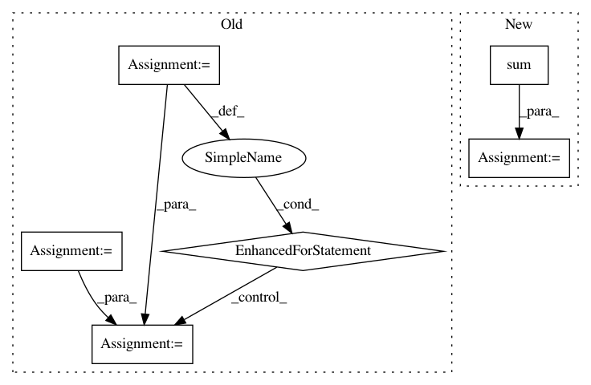

c8b28432a637a780eed96547260722ff3dede57e,niftynet/engine/sampler_selective.py,,candidate_indices,#Any#Any#Any#,203
Before Change
spatial_win_sizes = win_sizes[:N_SPATIAL]
// spatial_win_sizes = [win_size[:N_SPATIAL]
// for win_size in win_sizes.values()]
spatial_win_sizes = np.asarray(spatial_win_sizes, dtype=np.int32)
max_spatial_win = spatial_win_sizes[0]
// Create segmentation for this label
list_counts = []
shape_ones = np.asarray(data.shape)
// print(shape_ones, max_spatial_win)
half_max_size = np.floor(max_spatial_win / 2)
padding = []
for i in range(0, len(win_sizes)):
if i < N_SPATIAL:
shape_ones[i] -= 2 * half_max_size
padding = padding + [[half_max_size, half_max_size], ]
else:
padding = padding + [[0, 0], ]
// print(shape_ones, padding)
final = np.pad(np.ones(shape_ones), np.asarray(padding,
dtype=np.int32),
"constant")
new_win_size = np.copy(win_sizes)
// new_win_size[:N_SPATIAL] = win_sizes[0]/8
window_mean = np.ones(new_win_size, dtype=np.int32)
mean_counts_size = []
// print(unique)
for value in unique:
// print(np.sum(data), "sum in data", np.prod(data.shape),
// " elements in data")
seg_label = np.copy(data)
seg_label = np.asarray(seg_label, dtype=np.int32)
// print(np.sum(seg_label))
seg_label = np.where(seg_label == value, np.ones_like(data),
np.zeros_like(
data))
// print(np.sum(seg_label), " num values in seg_label ", value)
label_size = create_label_size_map(seg_label, 1)
// print(value, np.sum(seg_label), seg_label.shape,
// window_mean.shape, num_min)
// print("Begin fft convolve")
counts_window = fftconvolve(seg_label, window_mean, "same")
// print("finished fft convolve")
valid_places = np.where(counts_window > np.max([num_min, 1]),
np.ones_like(data), np.zeros_like(data))
counts_size = fftconvolve(label_size * valid_places, window_mean,
"same")
mean_counts_size_temp = np.nan_to_num(
counts_size * 1.0 / counts_window)
mean_counts_size_temp = np.where(counts_window == 0, np.zeros_like(
data), mean_counts_size_temp)
// print(np.max(counts_size), " max size")
// print(np.sum(valid_places), value)
if value in list_labels:
// print(value, "in list_labels")
mean_counts_size.append(mean_counts_size_temp)
final = valid_places * final
print("final calculated for value in list_labels")
else:
list_counts.append(valid_places)
// print(len(list_counts))
print("final characterisation")
for i in range(0, len(list_counts)):
// print(final.shape, list_counts[i].shape, np.max(final), np.max(
// list_counts[i]))
final += list_counts[i]
print("initialising candidates", num_labels_add)
candidates = np.zeros_like(data, dtype=np.int32)
candidates[final >= num_labels_add+1] = 1
print(np.sum(candidates), "number of candidates")
After Change
// // print(final.shape, list_counts[i].shape, np.max(final), np.max(
// // list_counts[i]))
// final += list_counts[i]
final = np.sum(list_counts)
print("initialising candidates", num_labels_add)
candidates = np.zeros_like(data, dtype=np.int32)
candidates[final >= num_labels_add + 1] = 1
print(np.sum(candidates), "number of candidates")
In pattern: SUPERPATTERN
Frequency: 4
Non-data size: 6
Instances
Project Name: NifTK/NiftyNet
Commit Name: c8b28432a637a780eed96547260722ff3dede57e
Time: 2017-10-04
Author: wenqi.li@ucl.ac.uk
File Name: niftynet/engine/sampler_selective.py
Class Name:
Method Name: candidate_indices
Project Name: maciejkula/spotlight
Commit Name: bc51dbc0c56f68ed30857755026633f78eef1ae8
Time: 2017-08-20
Author: maciej.kula@gmail.com
File Name: spotlight/layers.py
Class Name: BloomEmbedding
Method Name: forward
Project Name: OpenNMT/OpenNMT-py
Commit Name: 8a70c277c355fe734a01fe58baafdc2dc5164205
Time: 2016-12-29
Author: alerer@fb.com
File Name: OpenNMT/train.py
Class Name:
Method Name: eval
Project Name: catalyst-team/catalyst
Commit Name: 447444fd06594e531ae1141afac78051481e4468
Time: 2019-10-31
Author: scitator@gmail.com
File Name: catalyst/rl/offpolicy/algorithms/td3.py
Class Name: TD3
Method Name: update_step